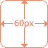
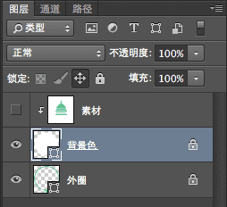
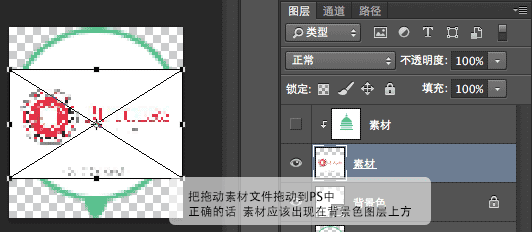
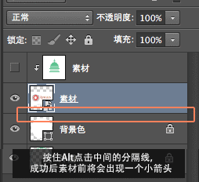
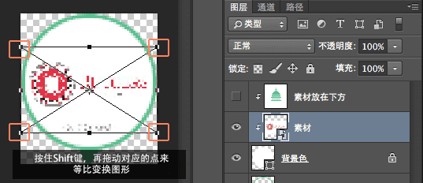
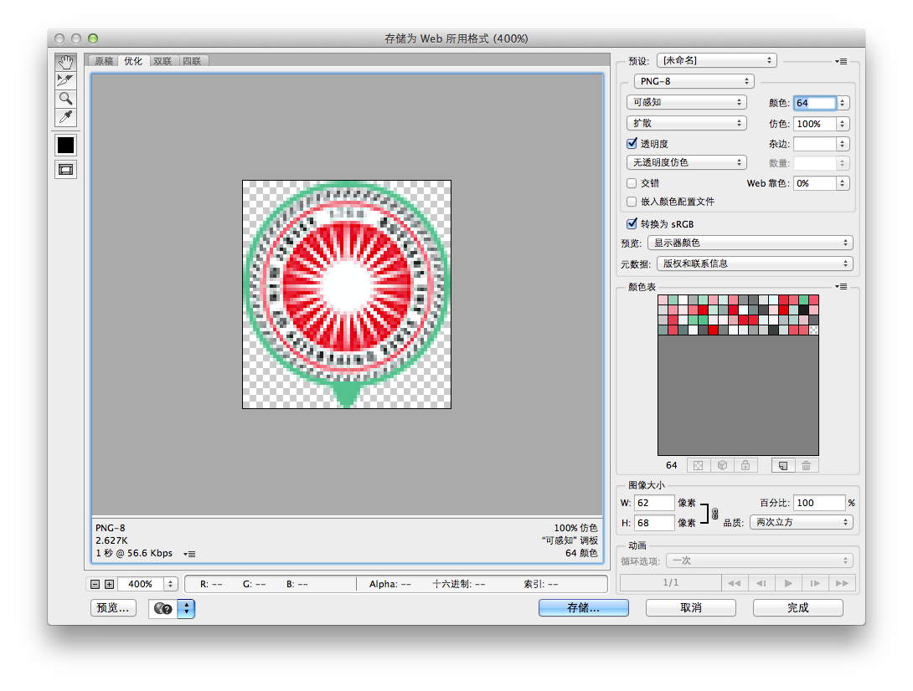

建议使用高级浏览器浏览
- Step1 找好学校图标素材
- 素材的大小最好是正圆或者正方形
- 素材的主体部分大小在60px X 60px以上

- Step2 将素材放入Photoshop
- 1. 在PS中打开下载的模板文件
- 2. 选中相关图层
- 3. 把素材拖入PS
- 4. 素材成功拖入后回车确认,图层嵌入成功,边框消失


- Step3 调整素材位置
- 1. 选中素材图层
- 2. 按住Alt键,点击素材图层和背景色图层中间的分隔线把素材嵌套到区域内
- 3. 如果素材有底色，选中底色图层，双击图层前方的小方块出现调色窗口后，点击素材中的底色，吸色成功后
- 4. 选按“command+T(Windows 按Ctrl+T),使图层进入变形模式”
- 5. 按住Shift键，同时拖动边框上的几个点来进行等比例变形
- 6. 在变形模式中，直接拖动元素来移动（不要拖动中心点）；不在编辑模式中，按住Command/Ctrl来移动元素（前提是选中素材图层）
- 7. 素材成功拖入后回车确认嵌入图层


- Step4 保存文件
- 1. 缩放和位置都调整OK
- 2. 依次点击菜单“文件--保存为Web所用格式”
- 3. 在右侧选择“PNG-8”，颜色选择“64”或者“128”，主要体积要小，够清晰
- 完成后，点击存储，选择保存的位置
- 最后，为了下次编辑，建议把刚才的素材图层删除或者隐藏（选中后点删除或者前面的小眼睛）
